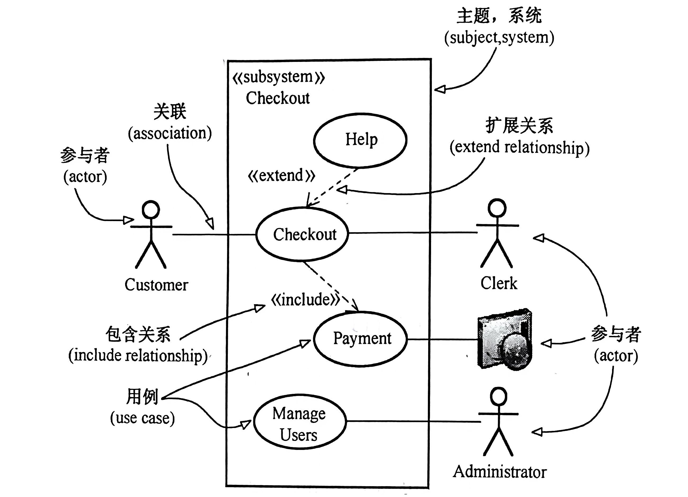
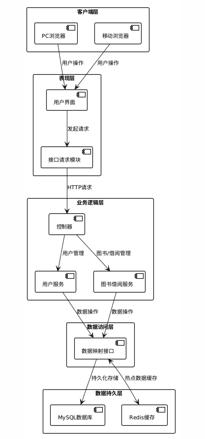
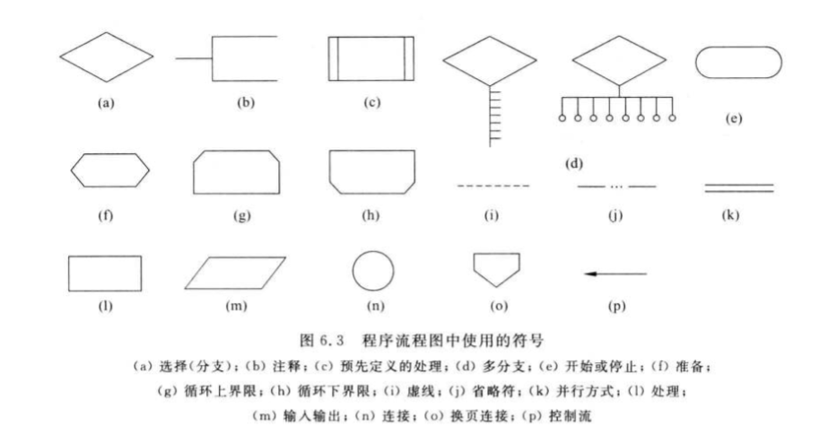

毕业设计论文分章节填空指南
请同学们严格按照以下小标题结构进行填充，切勿离题。
论文摘要写法
- 研究背景与目的： 简要介绍研究的背景或目的，阐明问题的重要性或实际需求。
- 技术架构与实现： 描述系统的技术架构、主要技术选型和设计模式，简要提到为什么选择这些技术。
- 核心功能与创新： 概述系统的核心功能、特色或创新点，突出系统的实际价值。
- 结论与贡献： 总结该系统的贡献或取得的成果，强调系统在实际应用中的效果或优势。
示例：实时在线论坛聊天系统摘要
论文摘要：
随着互联网技术的不断发展，在线交流成为日常生活中不可或缺的一部分。本文设计并开发了一款实时在线论坛聊天系统，旨在提供一个高效、稳定的用户交流平台。（研究背景与目的）
系统采用前后端分离架构，后端基于 Spring Boot 框架，结合 WebSocket 实现实时通信，确保用户信息即时同步。前端使用 Vue 框架提供响应式用户界面，优化了用户交互体验。系统采用 MVC 设计模式实现业务逻辑的解耦，集成 MySQL 数据库保障数据事务的安全性，并利用 Redis 缓存技术提升数据处理效率。（技术架构与实现）
核心功能包括用户身份认证、动态帖子管理、实时评论互动和消息推送等。系统还实现了分布式会话管理机制，增强了系统的扩展性和稳定性，确保在大规模用户访问情况下的高效运行。（核心功能与创新）
该系统不仅满足了实时在线交流的需求，还在性能和可扩展性方面做出了创新，具有较强的实用价值和应用前景。（结论与贡献）
第 1 章 绪论
- 写宏观环境：国家是否出台了相关数字化/互联网+的政策？
- 写行业痛点：传统人工管理模式有哪些弊端（如效率低、易出错、数据难统计）？
- 核心要求： 必须引用数据或具体现象说明“为什么现在需要做这个系统”。
- 国内现状：国内同类软件发展到了什么程度？有哪些大厂在做？
- 国外现状：国外是否有成熟的开源方案？
- 核心要求： 全篇论文至少引用 15 篇（其中外文2篇）参考文献的观点，指出现有系统的不足，建议全部在此处引用。
- 目的：本系统旨在实现xx流程的自动化/智能化。
- 意义：实际应用后能节省多少人力，或者提高多少效率。
第 2 章 相关技术与可行性分析
【写作指导】 梳理项目所采用的关键技术，并结合自身项目需求，阐明每项技术的选型理由。切忌空泛罗列定义或照搬网络资料，应体现出对技术与项目契合度的深入理解。
- 2.1.1 后端开发技术： 请结合项目的业务复杂度、开发周期、团队技术栈等实际情况，说明为何选择 Spring Boot。例如：Spring Boot 提供自动配置和丰富的生态支持，适合需要快速开发和后期可扩展的系统。
- 2.1.2 前端开发技术： 结合项目的页面交互复杂度、数据实时性等需求，说明 Vue 或 React 的组件化、响应式等特性如何满足这些需求，并提升开发效率和用户体验。
- 2.1.3 数据库技术： 说明项目对数据存储的需求（如并发量、数据一致性等），并结合 MySQL 的开源、性能稳定、易于维护等优势，阐述其适用性。
- 2.1.4 辅助与中间件技术（可选）： 针对项目中涉及的数据访问、缓存等场景，简要说明这些技术的辅助作用及其选用理由。
- 👉 严禁仅写“XX 是什么”，必须结合“项目需求→技术特性→选型理由”三步逻辑展开。
在此基础上分析项目能否落地：
- 2.2.1 技术可行性： 基于上述 2.1 介绍的技术，说明团队（你自己）是否已掌握，或者有丰富的文档支持开发。
- 2.2.2 经济可行性： 硬件成本（普通PC）、软件成本（开源免费）。
- 2.2.3 操作可行性： 系统界面友好，用户无需复杂培训。
第 3 章 需求分析
- 描述**核心业务**的数据流向（例如：用户下单 -> 商家接单 -> 发货）。
- 要求： 必须搭配**业务流程图**。
业务流程图画法教程：图书借阅
🤖 提示词示例： "请帮我画一个[图书借阅]的业务流程图，使用 PlantUML 泳道图语法，包含[读者]和[系统]两个角色。注意生成的图要满足UML 2.0 或更高版本的标准规范"
 PlantUML 代码示例
PlantUML 代码示例
@startuml
title 图书借阅标准活动图
|读者|
start
:挑选图书并出示借阅证;
|系统|
' 判定节点
if () then ([证件无效])
|读者|
:提示证件异常;
stop
else ([证件有效])
|系统|
:查询图书库存;
if () then ([库存不足])
|读者|
:提示图书已借完;
stop
else ([库存充足])
|系统|
:生成借阅记录;
:更新库存信息;
|读者|
:领取图书并离开;
endif
endif
stop
@enduml
- 按角色分类写（管理员能做什么？用户能做什么？）。
- 例如：管理员功能包括用户管理、商品管理、订单审核等。
- 要求： 必须搭配用例图(Use Case Diagram)（画法参考流程图的方法）。
用例图（Use Case Diagram）元素标注图（图来源：周华《软件设计与体系结构》P160，作者参考UML2.4）

- 性能需求： 规定系统的响应时间、并发数等指标。
- 安全性： 说明数据加密、权限控制、防攻击措施。
- 可靠性： 说明系统的稳定性、备份恢复机制。
- 兼容性： 说明支持的浏览器、设备类型。
写法示例（可测试版）
- 性能需求分析： 本系统主要在普通个人电脑环境下进行开发与测试，因此性能指标应以本地可验证结果为主。建议写成：在 Windows 系统、主流浏览器和本地数据库环境下，系统首页、列表页、详情页等常用页面应能正常打开，页面响应时间一般不超过 3~5 秒；对新增、修改、删除、查询等常见操作，提交后应在可接受时间内返回结果，且页面不出现长时间卡顿或无响应现象。此类指标可通过手动操作、录屏或截图方式在测试章节中验证。
- 安全性分析： 安全性需求应尽量写成“能检查、能验证”的内容。例如：系统应设置登录校验机制，输入错误用户名或密码时能够给出提示；不同角色登录后只能访问各自权限范围内的菜单和功能，越权访问时系统应禁止操作；用户密码不应以明文形式存储；对新增、编辑、搜索等输入框应进行必要的非空校验或格式校验。以上内容均可通过登录测试、角色切换测试、数据库字段查看或表单输入测试进行验证。若项目本身没有部署 HTTPS，就不要在论文中硬写 HTTPS 加密。
- 可靠性分析： 可靠性部分应结合学生本人可操作的测试条件来写。建议写成：系统在本地运行过程中，应能完成多次连续登录、查询、添加、修改、删除等操作而不出现明显报错或页面崩溃；对已经提交成功的数据，在刷新页面或重新登录后仍能正确显示；数据库数据应支持手动备份与恢复，备份文件能够正常导出，恢复后关键业务数据保持一致。这样写更容易在测试章节通过连续操作测试、刷新测试、重新登录测试和备份恢复测试进行说明。
- 兼容性分析： 兼容性需求不要笼统写“兼容所有浏览器和设备”，而应根据自己实际测试情况描述。例如：本系统主要面向 PC 端使用，已在 Chrome 和 Edge 浏览器中完成功能验证，页面布局正常，按钮、表单、表格和图片均可正常显示；在常见桌面分辨率下页面无明显错位，核心功能可以正常操作。如果项目确实做了移动端适配，再补充手机端或平板端测试结果；如果没有实际测试，就不要随意扩大表述范围。
第 4 章 系统设计
- 4.1.1 系统架构设计： 说明系统采用的架构模式（如 B/S 架构、MVC 模式、前后端分离架构）。需画出系统架构图（展示表现层、业务逻辑层、数据访问层等）。需要和业务结合
- 4.1.2 功能结构设计： 将需求分析中的功能进一步细化，画出系统功能结构图，清晰展示系统的模块划分。
示例图：系统架构图（4.1.1）

（图示：系统采用 B/S 架构，展示表现层、业务逻辑层、数据访问层等层次结构）
写法示例：系统功能结构描述
本系统主要划分为读者端和管理员端两大功能模块（我学院要求三个以及以上角色）：
- 读者端： 包含图书查询（支持模糊搜索）、借阅管理（查看当前借阅、历史记录）、个人中心（修改密码、个人信息维护）等功能。
- 管理员端： 包含图书管理（图书上架、下架、修改）、用户管理（读者账号审核、禁用）、借阅审核（处理借阅请求）、数据统计（借阅量统计图表）等功能。
（注：此处需配合功能结构图插入论文中）
- 不同的功能设计（如“借书”、“下单”），画出对应流程图，展示交互细节。
- 围绕一个核心业务功能展开说明，例如借阅、下单、预约、审核等。
- 需要说明该功能的处理流程、关键判断条件以及前后端交互过程。
- 建议： 本小节下直接放对应流程图和文字说明，不要把图和小节拆开写。
核心模块流程设计： 针对关键业务（如“借书”、“下单”），画出流程图，展示交互细节。流程图要符合以下要求(张海藩《软件设计与体系结构》P125)

- 继续选择另一个核心功能进行详细设计，写法与 4.2.1 保持一致。
- 如果是面向对象设计较强的系统，可以在此补充类图或模块交互说明。
- 写作提醒： 4.2.x 的每个功能设计，后文第 5 章最好都有对应实现小节，形成前后呼应。
- 4.3.1 概念结构设计： 必须放 E-R 图（实体关系图），展示实体、属性及实体间的关系（1:1, 1:N, M:N）。
- 4.3.2 逻辑结构设计： 必须放数据库表结构表格。每个表需包含：字段名、数据类型、长度、是否主键/外键、是否为空、备注说明。
写法示例：数据库概念设计（E-R图说明）
根据需求分析，本系统主要包含以下实体及其关系：
- 用户实体： 属性包含用户ID、用户名、密码、联系方式等。
- 图书实体： 属性包含图书ID、书名、作者、出版社、库存数量等。
- 借阅记录实体： 属性包含记录ID、借阅时间、归还时间、状态等。
实体间关系： 一个用户可以借阅多本图书（1:N），一本图书可以被多个用户借阅（但在同一时间只能被一人借阅，通过库存控制）。用户与借阅记录之间是 1:N 关系。
（注：此处需插入完整的 E-R 关系图）
🎓 专家建议：ER 图过大如何处理？
✅ 标准拆分原则
- 原则 1：按业务域拆分
推荐：用户权限、核心业务、辅助业务、基础数据。❌ 不推荐按表数量平均拆。 - 原则 2：先总后分
一张简化的“整体 ER 图” + 多张详细的“局部 ER 子图”。
🛠️ 画图技术规范
- 每张 ER 图 不超过 6–8 个实体。
- 实体命名与数据库表名一致。
- 关系基数（1:1 / 1:N / M:N）必须标注。
- 公共实体（如用户表）可在多张图中重复出现。
📍 推荐的结构示例（学生照抄即可）
要求：只保留核心实体、主要联系，不强制写字段。
包含：用户、角色、权限、用户角色关系表。
包含：核心实体（如座位）、业务记录（如预约）、时间/状态等。
包含：辅助业务实体（如请假、失物招领）。
📝 必须写的一段说明文字（老师最在意）
由于系统涉及的数据实体较多，若在同一张 ER 图中全部展示将导致图形过于复杂、可读性较差。因此本文采用“总体—局部”的方式对 ER 图进行拆分设计。首先给出系统总体 ER 图，用于描述系统核心实体及其主要关系；随后按照业务模块分别绘制局部 ER 图，对各模块内部的数据结构和实体关系进行详细说明，以提高数据模型的清晰性和可读性。
如果被问“为什么 ER 图拆成多张？”，请回答：
“为了避免单一 ER 图过于复杂，本文按照业务模块对 ER 图进行了拆分设计，在总体 ER 图的基础上，对各业务模块的数据结构进行了详细建模，这种方式更有利于系统数据结构的理解和维护。”
示例：数据库表结构表格（用户表 t_user）
| 字段名 | 数据类型 | 长度 | 约束 | 说明 |
|---|---|---|---|---|
| user_id | INT | 11 | 主键, 自增 | 用户ID |
| username | VARCHAR | 50 | 非空, 唯一 | 用户名 |
第 5 章 系统实现
⚠️ 注意： 不要贴代码！
- 简要介绍系统的开发环境和运行环境。
- 建议使用表格形式展示：
示例：开发环境配置表
| 操作系统 | Windows 10 / 11 |
| 开发工具 (IDE) | IntelliJ IDEA 2023.1 |
| JDK 版本 | JDK 1.8 / 17 |
| 数据库 | MySQL 8.0 |
- 5.2.1 登录注册模块： 展示登录界面截图，简述登录流程（如：前端校验 -> 发送请求 -> 后端验证 -> 返回 Token）。
- 5.2.2 图书借阅模块： 展示业务界面截图，并配合文字解释。
- 要求： 图文并茂，每个功能至少配 1 张图。
写法示例：登录功能实现描述
登录模块实现流程：
用户在登录界面输入账号和密码，点击登录按钮。前端首先进行非空校验，随后通过 Axios 发送 POST 请求将加密后的数据提交到后端 /api/login 接口。后端 Controller 接收请求后，调用 Spring Security 进行身份认证。若认证通过，系统生成 JWT Token 并返回给前端；若失败，则返回错误提示信息。前端接收到 Token 后将其存储在 LocalStorage 中，并跳转至系统首页。
写法示例：核心业务流程描述
图书借阅业务流程如下：
图书借阅业务的实现流程如下：用户在前端页面点击"立即借阅"按钮后，前端将用户ID和图书ID封装为JSON数据发送至后端接口；Controller层接收请求后，调用Service层进行业务处理；Service层首先校验用户状态是否正常，随后查询图书库存是否充足；若校验通过，系统扣减图书库存，并在数据库中生成一条借阅记录（状态为"借出"）；最后，后端返回操作成功信息，前端提示用户"借阅成功"。
第 6 章 系统测试
- 测试目的： 简述为什么要测试（如：发现潜在 Bug，验证功能是否符合需求，保证系统上线后的稳定性）。
- 测试环境： 说明测试使用的硬件（PC配置）和软件环境（浏览器版本、操作系统）。
- 格式要求： 必须使用表格形式。
- 表格列包含：测试模块、测试输入、预期结果、实际结果、结论（通过/不通过）。
- 至少列出 10-15 个测试点，覆盖主要功能。
示例：功能测试用例表
| 测试模块 | 测试用例描述 | 预期结果 | 实际结果 | 结论 |
|---|---|---|---|---|
| 登录模块 | 输入正确的用户名和密码 | 跳转至首页，显示用户信息 | 与预期一致 | 通过 |
| 登录模块 | 输入错误的密码 | 提示“用户名或密码错误” | 与预期一致 | 通过 |
| 借阅模块 | 借阅库存为0的图书 | 提示“库存不足”，无法借阅 | 与预期一致 | 通过 |
- 总结系统目前是否存在严重Bug，是否满足上线要求。
- 例如：“经过上述测试，本系统核心功能运行稳定，未发现严重逻辑错误，基本满足设计需求...”
结论
- 第一部分（研究总结）： 以“本文”“本系统”“本研究”为主语，概括论文完成的主要工作，如需求分析、系统设计、功能实现与测试验证，结论要与前文内容形成呼应。
- 第二部分（成果概括）： 简要说明系统达成了哪些预期目标，体现课题的应用价值，但避免使用“非常完美”“完全解决”等过度拔高的表述。
- 第三部分（不足与展望）： 客观指出当前仍存在的不足，如功能深度、性能优化、移动端适配、智能化程度等，并提出后续可继续完善的方向。
- 写作提醒： 结论不是摘要的简单重复，也不要写成心得体会，尽量避免“我认为”“我计划”等过于口语化、主观化的表达。
写法示例：结论与展望（完整版）
本文围绕高校图书管理工作的实际需求，设计并实现了一套基于 Spring Boot 与 Vue 的图书管理系统。论文首先对系统的研究背景、研究意义及国内外相关现状进行了分析，在此基础上完成了系统的需求分析、总体架构设计、数据库设计以及核心功能模块设计；随后实现了用户登录、图书查询、借阅管理、归还处理和逾期提醒等主要功能，并通过功能测试对系统的可用性和稳定性进行了验证。测试结果表明，该系统能够较好地满足图书日常管理的基本业务需求，在一定程度上提高图书管理工作的规范性与效率。
虽然系统已基本实现预期目标，但仍存在一定的完善空间。例如，当前系统在界面交互体验、移动端适配及数据分析功能方面还不够深入，对复杂业务场景下的性能优化也有待进一步加强。后续可在现有基础上继续完善系统功能，优化前端交互效果，增强多终端适配能力，并结合推荐算法与数据统计分析方法提升系统的智能化水平，从而进一步拓展系统的应用价值。
注意事项汇总
- 标题层级顺序必须统一： 第 1 章 → 1.1 → 1.1.1 → 1. → （1）。
- 格式细节要记住： “1.” 这一层级后面要加点；“（1）”这一层级本身不加点，后面直接接标题文字。
- 全文保持一致： 不要出现“1、”“(1).”“（1）.”“一、”“1）”等多种编号方式混用的情况。
- 表格基本规范： 表格应有表号和表题，通常写成“表 4-1 用户信息表”这类形式，表号与表题一般置于表格上方居中或按学校模板要求排版。
- 续表的使用场景： 当同一张表因内容过多跨页时，下一页不能重新编号为新表，应注明为同一张表的续表。
- 续表标准写法： 下一页表格上方标注“续表 4-1”或“表 4-1（续）”，并与前页保持同一表号；具体以学校模板或指导老师要求为准，但全文只能统一使用一种写法。
- 续表排版要求： 续表页必须重复表头，字段顺序、单位、字体、边框样式保持一致，不要在续表处重新写一套新的表题说明。
- 图表编号： 图和表应分别编号，如“图 3-1”“表 4-2”，不要图表混用同一套编号。
- 前后呼应： 正文中引用图表时应写成“如图 3-1 所示”“由表 4-2 可知”，不要只单独放图表不在正文解释。
- 格式统一： 字号、行距、段前段后、图题表题、编号样式尽量按学校模板统一设置，不要自己随意混搭。